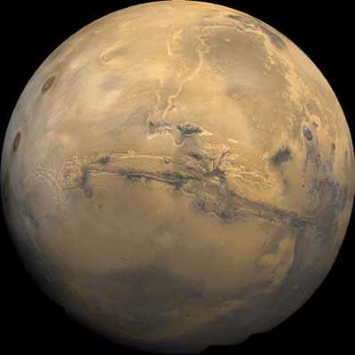
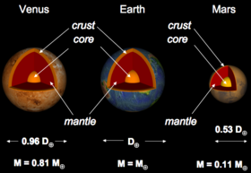
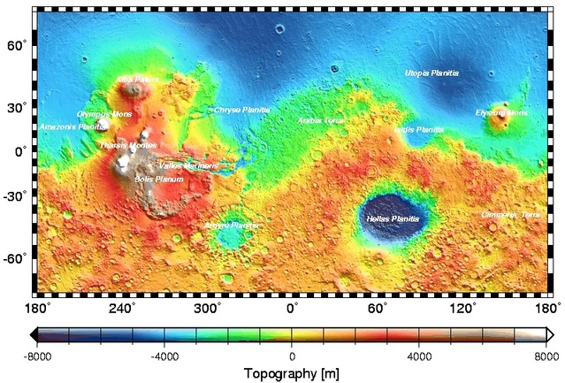
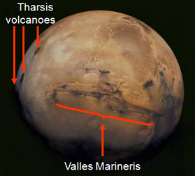
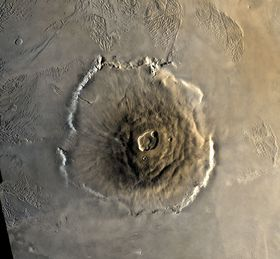
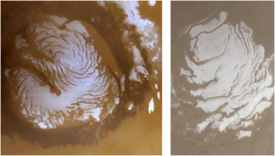
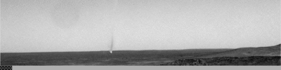

Mars is the fourth planet from the Sun with an average distance to the Sun of 2.28 × 108 km or 1.52 AU. It is a superior planet in that its orbit is larger than the Earths. It has two satellites, Phobos and Deimos.

Credit: Courtesy NASA/JPL-Caltech
Due to its larger orbit there are times when Mars is very close to Earth and the angular diameter can be as large as 25 arc seconds. The best viewing of Mars occurs when it is at opposition (when the Sun and Mars are at opposite sides of the sky) and when it is near perehelion of its elliptical orbit. At this time the Earth-Mars distance is only 0.37 AU. This happens about once every 15 years.
Mars makes one rotation on its axis every 24 hours and 37 minutes, much like Earth. As well, it’s rotation axis is tilted at 25 degrees (very similar to Earth with 23.5 degrees tilt), so that Mars experiences seasons, just like Earth. It has temperature extremes of 20 C and -140 C. The orbital period of Mars is 687 Earth days or 1.88 Earth years. Hence the Martian seasons last nearly twice as long as those on Earth.
Mars has a diameter of 6794 km or 0.53 Earth diameter and has a mass of ∼10% that of Earths. The crust of Mars is a single thick (varying between 40 – 70 km thick) tectonic plate.

Credit: Swinburne
The southern hemisphere is predominantly ancient cratered highlands. The majority of the northern hemisphere has plains which are much younger and lower in elevation. An abrupt elevation change of several kilometers seems to occur at the boundary.

Credit: MOLA Science Team
Whilst there is no tectonic plate motion on Mars, surface features suggest motion in the mantle. Valles Marineris, a rift valley some 4000 km long and 600 km wide, exists as well as the Tharsis rise, a dome-shaped bulge 5 – 6 km above the average elevation.

Credit: NASA/US Geological Survey
The Martian surface shows shield volcanoes – the largest of which, Olympus Mons, is 24 km above the surrounding plains. Since there is no tectonic activity, these volcanoes form via hot-spot volcanism where magma rises through a hot spot in the mantle.

Credit: NASA - Viking 1
Lava flows on Mars have impact craters which suggests that the flows are very old, and that the volcanoes are not active.
Mars has a thin, cold atmosphere compared to Earth and Venus. The surface pressure, 0.006 atmosphere, is the same as that at an altitude of 35 km on Earth. It is dominated by CO2 (95%), with 2.7% being nitrogen. Water vapour makes up about 0.03% and this can form clouds of ice crystals. Liquid water cant exist in the atmosphere or on the surface because the average temperature (-23 C) combined with extremely low pressure allows water to only exist as a solid or a gas. CO2 also forms crystals at very high altitudes and this form of CO2 also exists on the surface at the poles during their winters. Water in ice form also exists mixed with the frozen CO2 at the poles.

Credit: NASA/JPL/MSSS
Fine dust exists on Mars which is easily carried into the atmosphere and during large, high wind storms, can obscure the whole planet for many months.
Not only is the dust spread by such global storms but also by more local phenomena. Warm air rising during Martian afternoons allows whirlwinds, or dust devils to form.

Credit: NASA/JPL-Caltech